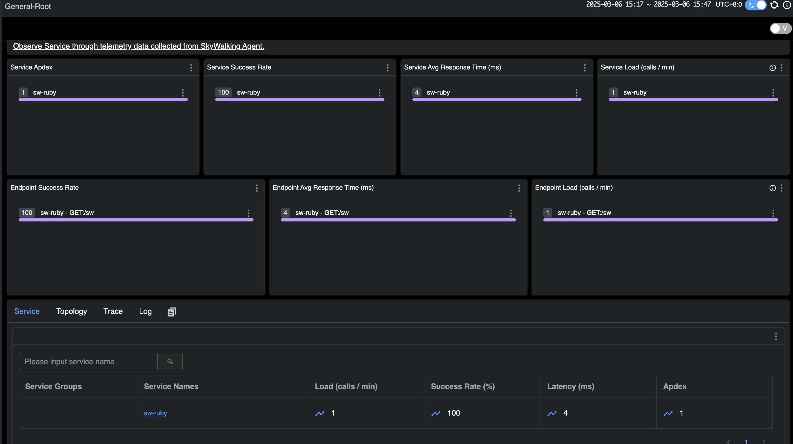
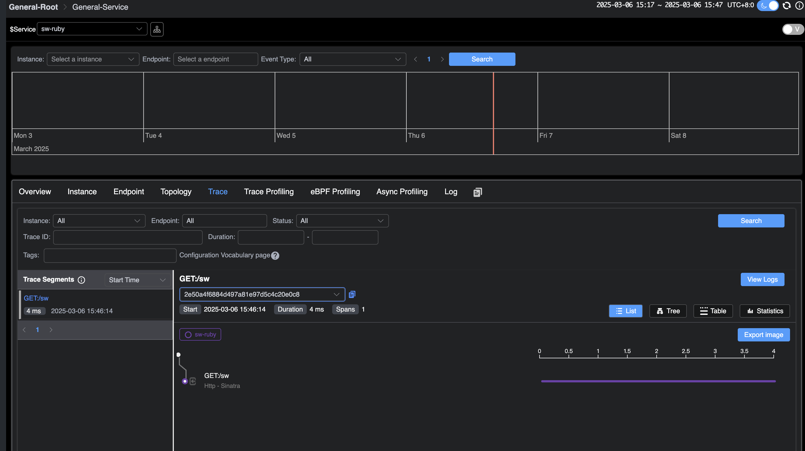

SkyWalking Ruby 快速开始与原理介绍
背景
Ruby 是一种动态、面向对象的编程语言，它的语法简洁优雅，支持多种编程范式，包括面向对象、函数式和元编程。其中依靠强大的元编程能力，Ruby 允许在运行时修改类和对象的行为。 SkyWalking 提供了 Ruby gem，方便 Ruby 项目集成, 该 gem 支持许多开箱即用的框架 和 gem。
本文基于 skywalking-ruby-v0.1，我们将指导你如何快速将 skywalking-ruby 项目集成到 Ruby 项目中，并以 redis-rb 为例，简要地介绍 SkyWalking Ruby 对插件自动探针的实现原理。
演示部分包括以下步骤：
- 部署 SkyWalking：这涉及设置 SkyWalking 后端和 UI 程序，使你能够看到最终效果。
- 为不同 Ruby 项目集成 skywalking：这里介绍了不同的 Ruby 项目如何集成 skywalking。
- 应用部署：你将导出环境变量并部署应用程序，以促进你的服务与 SkyWalking 后端之间的通信。
- 在 SkyWalking UI 上可视化：最后，你将发送请求并在 SkyWalking UI 中观察效果。
部署 SkyWalking
请从官方 SkyWalking 网站下载 SkyWalking APM 程序，然后 可以根据快速启动脚本启动所有所需服务。
接下来，你可以访问地址 http://localhost:8080/ 。此时，由于尚未部署任何应用程序，因此你将看不到任何数据。
为不同 Ruby 项目集成 SkyWalking
推荐使用 Bundler 来安装和管理 skywalking 的依赖。只需在 Gemfile 中声明，然后运行 bundle install 即可完成安装。
# Gemfile
source "https://rubygems.org"
gem "skywalking"
在 Rails 项目中集成
对于 Rails 项目，推荐使用以下命令自动生成配置文件：
bundle exec rails generate skywalking:start
该命令会在 config/initializers 目录下自动生成 skywalking.rb 文件，你可以在其中配置启动参数。
在 Sinatra 项目中集成
对于 Sinatra 项目，你需要手动在应用启动时调用 Skywalking.start。例如：
require 'sinatra'
require 'skywalking'
Skywalking.start
get '/sw' do
"Hello SkyWalking!"
end
在 Gemfile 中，将 skywalking 放在 sinatra 之后，并在初始化时使用 Bundler.require，或者在 sinatra gem 加载后 调用 require ‘skywalking’。注意，skywalking gem 需要位于其他 gem（如 redis、elasticsearch）之后。
应用部署
在开始部署应用程序之前，你可以通过环境变量更改 SkyWalking 中当前应用程序的服务名称。你还可以更改其配置，例如服务器端的地址。有关详细信息，请参阅文档。
在这里，我们将当前服务的名称更改为 sw-ruby。
接下来，你可以启动应用程序，这里以 sinatra 作为示例：
export SW_AGENT_SERVICE_NAME=sw-ruby
ruby sinatra.rb
在 SkyWalking UI 上可视化
现在，向应用程序发送请求并在 SkyWalking UI 中观察结果。
几秒钟后，重新访问 http://localhost:8080 的 SkyWalking UI。能够在主页上看到部署的 demo 服务。

此外，在追踪页面上，可以看到刚刚发送的请求。

插件实现机制
要了解 Ruby Agent 对插件自动探针的实现机制，首先要了解 Ruby 中祖先链的概念。祖先链是一个有序的列表，在 Ruby 中，每个类或模块都有一个祖先链， 它包含了一个类或模块的所有父类以及 mixin 模块（通过 include、prepend 或 extend 混入的模块）。 Ruby 在查找方法时，会按照祖先链的顺序依次查找，直到找到目标方法或抛出 NoMethodError。
class User
end
我们定义了一个 User 类，那么它的祖先链是如下图：

接下来用 prepend 方法混入一个模块：
module Dapper
def brave
"Hello from brave"
end
end
class User
prepend Dapper
end
p User.new.brave # => "Hello from brave"
prepend 会在上图 1 处进行插入，Ruby 首先在 Dapper 模块中查找 brave 方法，找到并调用，如果 Dapper 中没有 brave 方法，
Ruby 会继续查找 User 类。 如果 User 类中也没有，Ruby 会继续查找 Object，依此类推。
根据这样的机制，简单介绍下我们如何对 redis-rb 进行方法插桩，下面代码是要进行插桩的目标方法：
# lib/redis/client.rb
class Redis
class Client < ::RedisClient
def call_v(command, &block)
super(command, &block)
rescue ::RedisClient::Error => error
Client.translate_error!(error)
end
end
end
下面是进行插桩的核心代码：
module Skywalking
module Plugins
class Redis5 < PluginsManager::SWPlugin
module Redis5Intercept
def call_v(args, &block)
operation = args[0] rescue "UNKNOWN"
return super if operation == :auth
Tracing::ContextManager.new_exit_span(
operation: "Redis/#{operation.upcase}"
) do |span|
# 省略对 span 的处理
super(args, &block) # 调用原方法
end
end
end
def install
::Redis::Client.prepend Redis5Intercept
end
end
end
end
这里我们定义了一个 Redis5Intercept 模块，并将其作为 ::Redis::Client 的前置模块，根据 Ruby 方法查找机制，
当 Redis::Client 的 call_v 方法被调用时，Ruby 会首先会执行 Redis5Intercept 中的 call_v 方法，这里祖先链的顺序如下：
Redis5Intercept -> Redis::Client -> ...（其他父类和模块）
同时在 Redis5Intercept 中的 call_v 方法中，super(args, &block) 会沿着祖先链找到下一个同名方法，
在这里也就是 Redis::Client 中的原始 call_v 方法，同时传递原始的参数和代码块。
总结
本文讲述了 Skywalking Ruby 在 Ruby 项目中的集成方法，并简要介绍了 SkyWalking Ruby 对插件自动探针的实现机制。
目前 Ruby 探针处于早期的开发阶段，未来我们将继续扩展 SkyWalking Ruby 的功能，添加更多插件支持。所以，请继续关注！